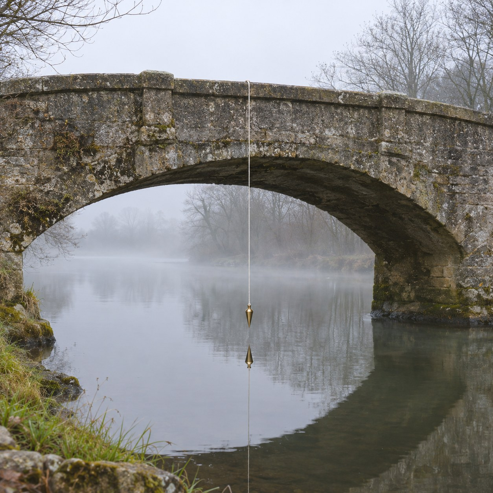
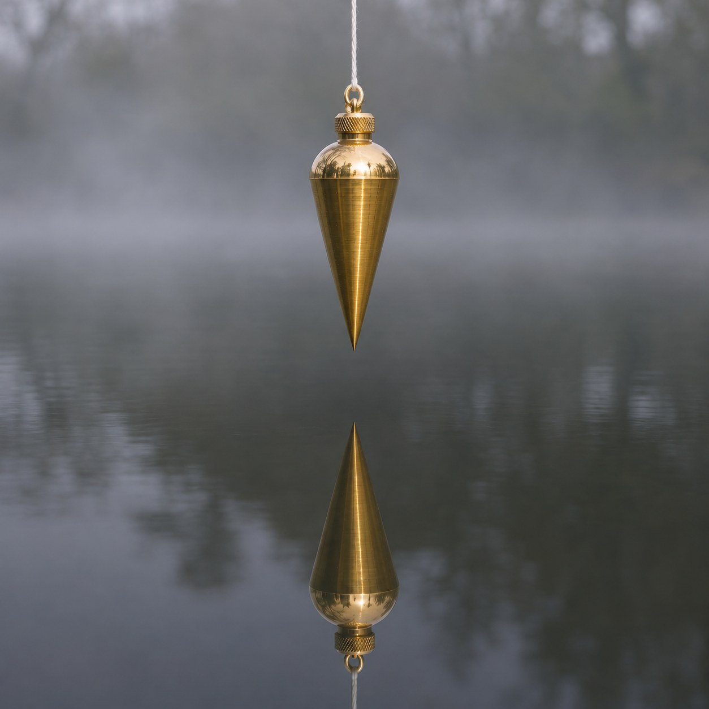

The Same Down


From the middle of a footbridge hangs a plumb line: a brass weight on a white string, its point a hand's width above the river. It is the oldest way of asking which way is down. Builders have trusted it over their own eyes for thousands of years, because the eye can be fooled and the weight cannot.
What it points at is a place no one has been. Follow the string straight on, through the water, the mud and the rock, for six thousand three hundred and seventy kilometres, and you reach the centre of the Earth. The deepest hole anyone has drilled goes down about twelve.
Every plumb line in the world points there. So does every hanging lamp, every dropped key, every person standing up straight. Which means no two of them are quite parallel. Two people standing side by side lean very slightly apart. Their heads are further from each other than their feet, by less than a thousandth of a millimetre, and their feet are aimed at the same spot.
In a film from 1971, Bas Jan Ader hangs from the branch of a tree over a creek until his hands give out and he drops into the water. It is a film about the moment the body stops refusing. The plumb line never refuses. It hangs there wanting, completely, to go where everything is going, and a string holds it back just far enough to show the way.
The river under it is going the same way, slowly and sideways, the long way round.
In the still water, its reflection points up.